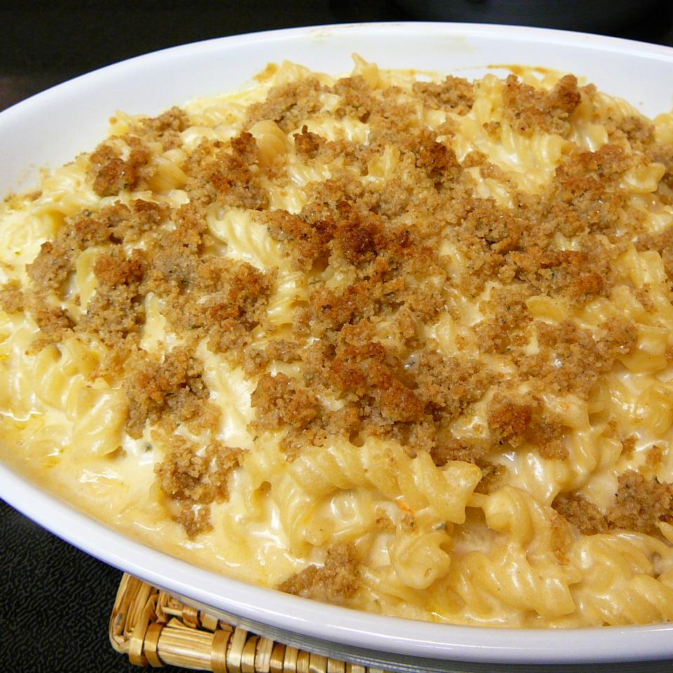

Mac and Cheese

Description
Your classic Mac and Cheese with a spicy kick!
Ingredients
- 11/2 cups rotelle pasta
- 4 tablespoons butter, divided
- 1/4 cup all-purpose flour
- 3 cups whole milk
- 1 teaspoon dry mustard
- 3/4 teaspoon salt
- 1/2 teaspoon ground white pepper
- 3 teaspoons hot pepper sauce
- 1 cup shredded pepperjack cheese
- 11/2 cups shredded sharp Cheddar cheese
- 1/2 cup grated Parmesan cheese
- 1/3 cup dry bread crumbs
- 2 teaspoons chili powder
Steps
-
Preheat oven to 375 degrees F (190 degrees C).
-
Bring a large pot of lightly salted water to a boil.
Add pasta and cook for 8 to 10 minutes or until al dente; drain.
-
In a large saucepan over medium heat, melt 2 tablespoons
butter. Whisk in flour and cook, stirring, 1 minute. A little
at a time, whisk in milk, mustard, salt, pepper and hot sauce.
Bring to a gentle boil, stirring constantly. Boil 1 minute, then
remove from heat and whisk in pepperjack, Cheddar and Parmesan
until smooth. Stir in cooked pasta and pour into shallow 2 quart
baking dish.
-
Melt remaining 2 tablespoons butter. Stir in bread crumbs
and chili powder. Sprinkle over macaroni mixture.
-
Bake in preheated oven 30 minutes. Let stand 10 minutes before serving.